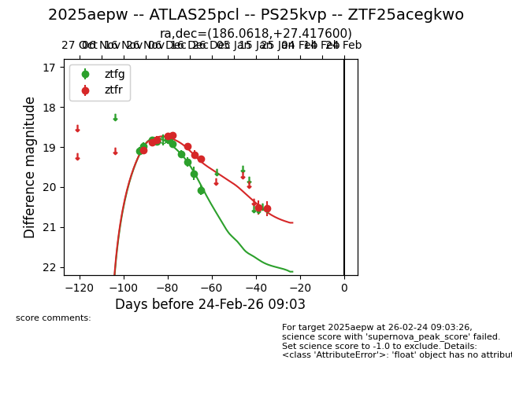
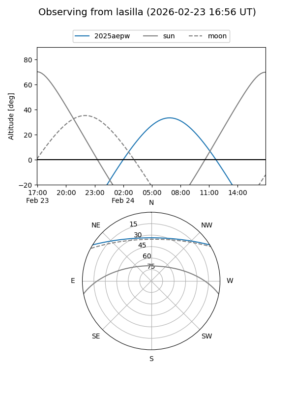
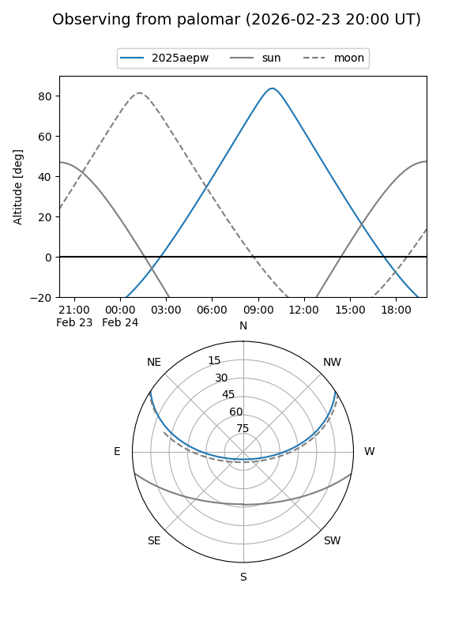
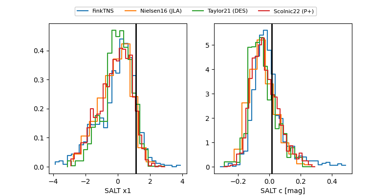

2025aepw
Target 2025aepw at 2025-12-30 22:09
Aliases and brokers:
FINK: fink-portal.org/ZTF25acegkwo
Lasair: lasair-ztf.lsst.ac.uk/objects/ZTF25acegkwo
ALeRCE: alerce.online/object/ZTF25acegkwo
TNS: wis-tns.org/object/2025aepw
YSE: ziggy.ucolick.org/yse/transient_detail/2025aepw
alt names
ZTF25acegkwo (ztf,fink_ztf)
2025aepw (tns,yse)
ATLAS25pcl (atlas)
PS25kvp (panstarrs)
Coordinates:
equatorial (ra, dec) = 186.0618,+27.41760
equatorial (HMS+DMS) = 12:24:14.83,+27:25:03.36
galactic (l, b) = (208.6345,+83.95182)
Flags:
Photometry:
last atlasc=18.91, atlaso=18.98, ztfg=20.07, ztfr=19.30
3 atlasc, 1 atlaso, 10 ztfg, 8 ztfr detections
Lightcurve

Visibility


Additional plots
